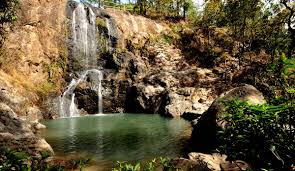
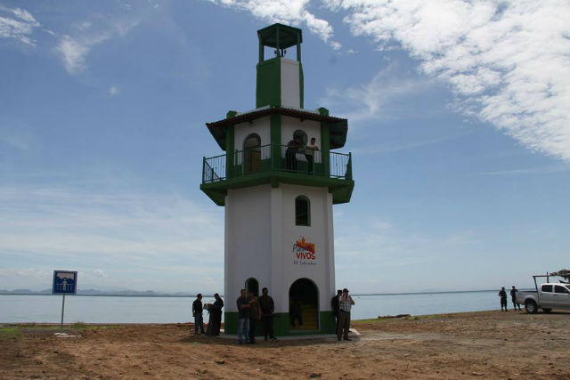

Al departamento se le dio el nombre actual por decreto el 14 de marzo de 1887, en honor del paladín de la Unión Centroamericana, general Francisco Morazán. Por ley del 5 de febrero de 1877 se otorgó a la villa de Gotera el título de ciudad. Fue fundado como departamento el 14 de julio de 1875. Morazán se ubica en la zona geográfica oriental de la República. Está limitado al norte por Honduras, y al sur y al oriente por el departamento de San Miguel. Tiene una altitud de 245 metros sobre el nivel del mar y su extensión territorial es de 1,447 kilómetros cuadrados.
El municipio más grande de todos ellos es Cacaopera, y San Francisco Gotera es la ciudad donde se ubica la cabecera departamental de Morazán, es decir el centro del departamento. El municipio más pequeño es San Isidro.
El departamento de Morazan ofrece una de las mas amplias y actractivas opciones para practicar el eco turismo en El Salvador. Impulsar y desarrollar esas riquezas naturales es la tarea de la sociacion Pro Desarrollo Turistico, PRODETUR. Aventuras de Perquin es un lugar muy recomendado para que lo puedas visitar, esta ubicado en Desvio La Tejera, Carretera Internacional a Honduras, Bailadero del Diablo, Perquin, Morazán, El Salvador, quizás esta dirección te parezca un poco larga, pero créeme que este sitio vale la pena visitarlo.
